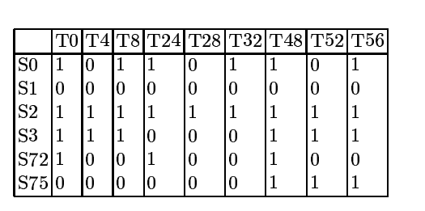
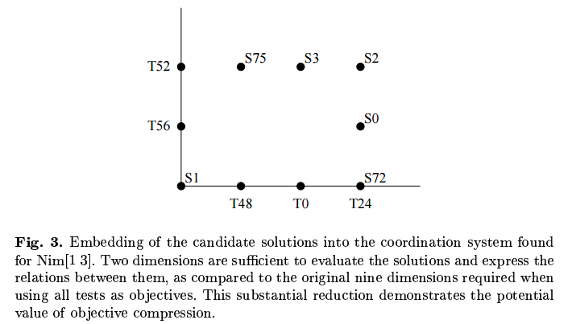

The challenge of accurate evaluation
In most machine learning and evolutionary computation applications, there is a single goal function or error measure that is defined upfront, and which does not change over time. Often however, defining an accurate evaluation function is a hard problem in itself. Take game playing for example; it’s impossible to determine if a given chess-playing strategy is a good strategy without having access to opponent strategies that provide an indication of quality.
Learning by self-play: relation with coevolution
In coevolutionary algorithms, candidate solutions are evaluated based on interactions with other evolving entities. For example, a chess playing strategy could be evolved by playing it against a population of opponent strategies that also evolve over time. Learning by letting the strategy play against itself can be seen as a special case of coevolution; promising results were obtained in Tesauro’s work on Backgammon, and Pollack and Blair convincingly argue that a large part of the success of this approach can be attributed to the coevolutionary aspect of self-learning setups. More recently, Google Deepmind’s groundbreaking work on mastering Go also employed this coevolutionary self-learning approach at its core, reaching a level of play that represents one of the greatest achievements in AI of the past decades.
-1400.jpg)
See the AlphaGo Nature article
Evolving the evaluation function
What makes coevolution interesting is that it provides a way to bootstrap the evaluation function; by coevolving the opponent strategies, we can optimize the quality of the chess player while at the same time improving the opponent strategies that are used to evaluate it. In principle this can lead to an arms race where increasingly effective strategies are developed over time. Establishing such a process requires careful attention to the co-evolving entities used for evaluation; if the opponents merely change over time, there is no guarantee that the changes in the resulting evaluation function will lead to overall progress.
Pareto-Coevolution: an Evolutionary Multi-Objective Optimization perspective on Coevolution
A major question in coevolution research has been how the coevolving opponents or test cases can be guided such that the learning process results in overall progress. Ficici and Noble and Watson noted that by taking a Multi-Objective Optimization point of view, possible opponents or test cases can be viewed as dimensions of the evaluation function. This approach is known as Pareto-coevolution.
Learning the ideal evaluation function
Taking this idea as a starting point, it can be demonstrated that for any given set of candidate solutions, it is possible to construct a set of opponents or test cases of limited size that provides evaluation that is exactly equivalent to using all possible opponents or test cases as objectives. In other words, ideal evaluation (as defined by the complete space of possible opponents or tests) is possible using only a limited set of of actual opponents or test cases. This provides a principled approach to identifying and selecting relevant test cases for the evaluation of the learning system.
The article on this work:
De Jong, E.D. and Pollack, J.B. (2004). Ideal Evaluation from Coevolution. Evolutionary Computation 12(2):159-192.
Ideal Evaluation: a limited set of opponents or test cases is sufficient to provide multi-objective evaluation that is equivalent to using all possible opponents or test cases as objectives. Proof: see article.
Generative Adversarial Networks (GANs) and coevolution
Recently, the use of Generative Adversarial Networks (GANs) has become popular in Machine Learning. I believe there is a wealth of experience from the area of coevolutionary algorithms that can be drawn from to further develop the field of GANs. In particular, I expect that the stability of training with GANs can be improved by maintaining a carefully selected population of adversarial networks.

Blog post by Nicholas Guttenberg on stability analysis of GANs: see here for details.
Objective Set Compression: extracting the underlying objectives
We have seen that individual opponents or test cases can be viewed as objectives in the sense of Multi-Objective Optimization. Taking chess as an example again, it is clear that within the set of all possible chess strategies, there will be similarities between some strategies and differences between others. For example, we could encounter two opponents that favor the same starting strategies, but differ in their end-game. In the same way that examples in machine learning problems can be characterized by features, we may imagine that opponent or test strategies can be characterized by a limited number of features or dimensions that define their action preferences in different contexts. The idea behind Objective Set Compression is to see whether a limited set of dimensions can be defined that span the space of all possible opponents or test cases.
The starting point for Objective Set Compression is to consider the interaction outcomes between solutions and opponents or test cases. Let’s consider a simple game: Nim, where players remove one or more matches from one row at a time, and the player that takes the last match wins. For Nim [1 3], the configuration containing two rows with one and three matches respectively, there are 144 different strategies. After removing first-player strategies that have identical outcomes against all second-player strategies and vice-versa, six unique first-player strategies and nine unique second-player strategies are left. The outcome vectors for all combinations of these unique first-player and second-player strategies are shown in the table below.

Table: Outcome vectors for each of the six unique first-player strategies in Nim[1 3] against all nine unique second-player (opponent) strategies. See article.
Given the matrix of interaction outcomes, we can now analyze which opponents or tests (second-player strategies in this case) are consistent, in that one test can be viewed as a stronger variant of the other, winning against strictly more players. By doing so, we can combine tests on axes that may be thought to represent the underlying dimensions of the game. It so turns out that the nine opponent strategies can be represented by a set of only two dimensions. The performance of a solution is uniquely characterized by its position in the resulting 2D space; its outcome against each of the nine unique opponent strategies can be derived from its position in the 2D space spanned by these reconstructed underlying objectives.

Embedding of the unique Nim[1 3] first-player strategies into a two-dimensional objective space, spanned by five of the nine unique second-player strategies that function as opponents or tests.
Article: De Jong, E.D. and Bucci, A. (2008). Objective Set Compression. Multiobjective Problem Solving from Nature, Springer.
Representation Learning in the Deep Learning age
Adapting opponents or test-cases is only one particular instantiation of the concept of coevolution. At least as interesting is to consider the mutually dependent role of solutions and the representation in which they are encoded. Representation learning is one of the key aspects of the deep learning revolution. In the typical machine learning setup, the learning system is used in combination with a single representation. A promising variant is to consider a set or population of candidate representations, whose quality is defined by the performance of learning algorithms that make use of it. Promising early results regarding the coevolution of representations with solutions that employ them were obtained by Moriarty using the SANE algorithm. The combination of modern representation learning techniques with these earlier architectures for jointly developing representations and solutions that employ them is worth exploring, and may well lead to more powerful representation learning architectures.